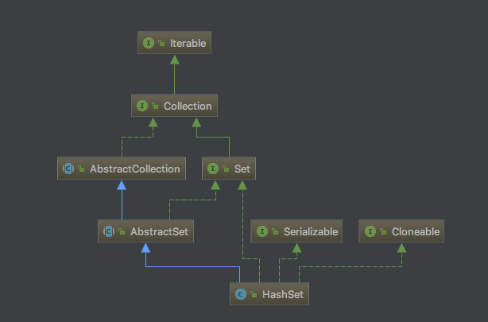
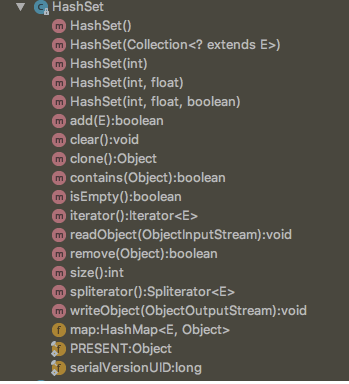

前面花了好几篇的篇幅把HashMap里里外外说了个遍，大家可能对于源码分析篇已经讳莫如深了。别慌别慌，这一篇来说说集合框架里最偷懒的一个家伙——HashSet，为什么说它是最偷懒的呢，先留个悬念，看完本文之后，你就会知道所言不假了。
本篇将从以下几点来进行介绍：
1.HashSet的特点和使用场景
2.HashSet的示例
3.HashSet的继承结构图
4.HashSet的源码解析
HashSet的特点和使用场景
HashSet是Set家族的一员，所以也具有着Set的全部性质，比如元素无序，元素不可重复，但HashSet也有它自己的一些特性，比如它的查找效率很高，跟HashMap的查找效率一样高，它的基本操作如，add/remove/contains/size等都只需要常量时间的开销，并且允许存在null值。
所以HashSet的一个很重要的应用就是去重，把一堆存在重复的数据往HashSet里一丢，里面的元素因为是不会存在重复的，所以再取出来的时候就已经是去重过的数据了，这样HashSet就像一个筛子，把数据筛选了一次。另外HashSet由于其查找效率很高，所以也用于数据的查找，比如将处理过的数据往里面一丢，处理下一个数据的时候先到HashSet中查找一次，如果存在则说明已经处理过，不存在则继续处理。
HashSet的示例
接下来，看一个HashSet的小栗子吧。
1 public class Test {
2
3 public static void main(String[] args){
4 //nameList中可以存在重复元素，且顺序跟插入的顺序相同
5 List<String> nameList = new ArrayList<>();
6 nameList.add("Alice");
7 nameList.add("Frank");
8 nameList.add("Charles");
9 nameList.add("Emma");
10 nameList.add("Jessie");
11 nameList.add("Frank");
12 System.out.println(nameList);
13
14 //将列表里的元素插入到Set后，可以去除重复元素，但是没有顺序
15 System.out.println("====add====");
16 Set<String> nameSet = new HashSet<>();
17 for (String name : nameList){
18 nameSet.add(name);
19 }
20 System.out.println(nameSet);
21
22 System.out.println("====contains====");
23 System.out.println(nameSet.contains("Frank"));
24 System.out.println(nameSet.contains("Bob"));
25
26 System.out.println(nameSet.containsAll(nameList));
27
28 System.out.println("====remove====");
29 nameSet.remove("Frank");
30 System.out.println(nameSet);
31
32 nameSet.forEach(System.out::println);
33
34 System.out.println("====Iterator====");
35 Iterator iterator = nameSet.iterator();
36 while (iterator.hasNext()){
37 System.out.println(iterator.next());
38 }
39
40 }
41 }
输出如下：
[Alice, Frank, Charles, Emma, Jessie, Frank]
====add====
[Charles, Alice, Jessie, Frank, Emma]
====contains====
true
false
true
====remove====
[Charles, Alice, Jessie, Emma]
Charles
Alice
Jessie
Emma
====Iterator====
Charles
Alice
Jessie
Emma
HashSet的继承结构图

HashSet是继承自AbstractSet类的，同时实现了Set接口，Serializable接口，Cloneable接口，AbstractSet是Set的便利类，实现了Set接口的部分方法框架，AbstractSet里的方法其实很少，它继承自AbstractCollection类，同时实现了Set接口。
1 public abstract class AbstractSet<E> extends AbstractCollection<E> implements Set<E> {
2
3 protected AbstractSet() {
4 }
5
6 // 比较和哈希
7
8 /**
9 * 比较两个HashSet是否相等
10 * 先比较是否是同一个引用，然后判断o是否实现了Set接口
11 * 再比较它们的大小是否一致，最后判断是否包含了o中所有元素
12 */
13 public boolean equals(Object o) {
14 if (o == this)
15 return true;
16
17 if (!(o instanceof Set))
18 return false;
19 Collection<?> c = (Collection<?>) o;
20 if (c.size() != size())
21 return false;
22 try {
23 return containsAll(c);
24 } catch (ClassCastException unused) {
25 return false;
26 } catch (NullPointerException unused) {
27 return false;
28 }
29 }
30
31 /**
32 * hashCode方法，计算所有元素的hashCode之和
33 */
34 public int hashCode() {
35 int h = 0;
36 Iterator<E> i = iterator();
37 while (i.hasNext()) {
38 E obj = i.next();
39 if (obj != null)
40 h += obj.hashCode();
41 }
42 return h;
43 }
44
45 /**
46 * 移除所有在集合c中的元素
47 * 如果c中元素个数小于该Set中的元素个数，则遍历c中的元素，使用Set中的remove方法进行移除。
48 * 相反，如果c中的元素个数大于Set中的元素个数，则遍历该Set中的元素，如果存在于c中，则调用迭代器的remove方法进行移除。
49 */
50 public boolean removeAll(Collection<?> c) {
51 Objects.requireNonNull(c);
52 boolean modified = false;
53
54 if (size() > c.size()) {
55 for (Iterator<?> i = c.iterator(); i.hasNext(); )
56 //这里其实用了一个很巧妙的位操作，只要remove有一次成功，则返回true，modified就会变成true，之后不管remove返回true还是false，与modified进行或操作的时候结果都是true，所以只要remove中有一次是成功的，modified变量就是true
57 modified |= remove(i.next());
58 } else {
59 for (Iterator<?> i = iterator(); i.hasNext(); ) {
60 if (c.contains(i.next())) {
61 i.remove();
62 modified = true;
63 }
64 }
65 }
66 return modified;
67 }
68
69 }
HashSet的源码解析

先来看看源码的结构：
相比HashMap是不是方法少了很多很多，也许你会好奇，HashSet是如何用将精华操作塞在这么少的方法中的，嗯，一起来看看它是怎样实现的吧：
public Iterator<E> iterator() {
return map.keySet().iterator();
}
public int size() {
return map.size();
}
public boolean isEmpty() {
return map.isEmpty();
}
public boolean contains(Object o) {
return map.containsKey(o);
}
public boolean add(E e) {
return map.put(e, PRESENT)==null;
}
public boolean remove(Object o) {
return map.remove(o)==PRESENT;
}
public void clear() {
map.clear();
}
@SuppressWarnings("unchecked")
public Object clone() {
try {
HashSet<E> newSet = (HashSet<E>) super.clone();
newSet.map = (HashMap<E, Object>) map.clone();
return newSet;
} catch (CloneNotSupportedException e) {
throw new InternalError(e);
}
}
看完你也许会觉得，WTF？？？主要方法全部是一行代码解决？？来看看这个map到底是何方神圣：
private transient HashMap<E,Object> map;
惊不惊喜，意不意外，HashSet其实就是里面放了一个HashMap实例，所有操作都是通过HashMap去完成的，至于它的元素不可重复特性，也是借助于HashMap的键值不可重复实现的。嗯，说它是最懒的容器类不过分吧。
再来看看它的几个构造函数：
1 /**
2 * 构造一个空的HashSet，其中的HashMap实例使用默认的初始容量（16）和默认的装载因子（0.75）
3 */
4 public HashSet() {
5 map = new HashMap<>();
6 }
7
8 /**
9 * 构建一个包含指定集合所有元素的HashSet，其中的HashMap实例使用默认的装载因子（0.75）和能够容纳下集合中所有元素的初始容量（别忘了，必须是2的幂次方）
10 */
11 public HashSet(Collection<? extends E> c) {
12 map = new HashMap<>(Math.max((int) (c.size()/.75f) + 1, 16));
13 addAll(c);
14 }
15
16 /**
17 * 构建一个空的HashSet，其中的HashMap实例使用指定的加载因子和初始容量
18 */
19 public HashSet(int initialCapacity, float loadFactor) {
20 map = new HashMap<>(initialCapacity, loadFactor);
21 }
22
23 /**
24 * 构建一个空的HashSet，其中的HashMap使用默认的加载因子和指定的容量大小
25 */
26 public HashSet(int initialCapacity) {
27 map = new HashMap<>(initialCapacity);
28 }
29
30 /**
31 * 构建一个空的LinkedHashSet，这是一个包私有的构造器，仅仅被LinkedHashSet使用，里面的HashMap是一个LinkedHashMap实例，使用指定的容量和装载因子
32 * dummy是一个没有意义的参数，目的是为了跟上面的构造函数区分开来，如果没有这个参数，将不能进行有效重载
33 */
34 HashSet(int initialCapacity, float loadFactor, boolean dummy) {
35 map = new LinkedHashMap<>(initialCapacity, loadFactor);
36 }
37
38
所以，其实可以灵活定制HashSet的大小和装载因子，只是一般情况下，使用默认的即可，除非知道里面要放的元素个数，并且数量比较大时，才需要进行指定容量，这样可以减少扩容次数。
再来看看剩下的几个函数：
/**
* 序列化
*/
private void writeObject(java.io.ObjectOutputStream s)
throws java.io.IOException {
// Write out any hidden serialization magic
s.defaultWriteObject();
// Write out HashMap capacity and load factor
s.writeInt(map.capacity());
s.writeFloat(map.loadFactor());
// Write out size
s.writeInt(map.size());
// Write out all elements in the proper order.
for (E e : map.keySet())
s.writeObject(e);
}
/**
* 反序列化
*/
private void readObject(java.io.ObjectInputStream s)
throws java.io.IOException, ClassNotFoundException {
// Read in any hidden serialization magic
s.defaultReadObject();
// Read capacity and verify non-negative.
int capacity = s.readInt();
if (capacity < 0) {
throw new InvalidObjectException("Illegal capacity: " +
capacity);
}
// Read load factor and verify positive and non NaN.
float loadFactor = s.readFloat();
if (loadFactor <= 0 || Float.isNaN(loadFactor)) {
throw new InvalidObjectException("Illegal load factor: " +
loadFactor);
}
// Read size and verify non-negative.
int size = s.readInt();
if (size < 0) {
throw new InvalidObjectException("Illegal size: " +
size);
}
// Set the capacity according to the size and load factor ensuring that
// the HashMap is at least 25% full but clamping to maximum capacity.
capacity = (int) Math.min(size * Math.min(1 / loadFactor, 4.0f),
HashMap.MAXIMUM_CAPACITY);
// Constructing the backing map will lazily create an array when the first element is
// added, so check it before construction. Call HashMap.tableSizeFor to compute the
// actual allocation size. Check Map.Entry[].class since it's the nearest public type to
// what is actually created.
SharedSecrets.getJavaOISAccess()
.checkArray(s, Map.Entry[].class, HashMap.tableSizeFor(capacity));
// Create backing HashMap
map = (((HashSet<?>)this) instanceof LinkedHashSet ?
new LinkedHashMap<E,Object>(capacity, loadFactor) :
new HashMap<E,Object>(capacity, loadFactor));
// Read in all elements in the proper order.
for (int i=0; i<size; i++) {
@SuppressWarnings("unchecked")
E e = (E) s.readObject();
map.put(e, PRESENT);
}
}
/**
* 可分割式迭代器
*/
public Spliterator<E> spliterator() {
return new HashMap.KeySpliterator<E,Object>(map, 0, -1, 0, 0);
}
嗯，HashSet的介绍就这么多了，很简单吧。
之后还会继续将容器家族中常见的容器类进行源码解析，如LinkedList，LinkedHashMap，LinkedHashSet，TreeMap，TreeSet。嗯，所以预计关于容器类还有至少五篇文章，希望大家能耐心看下去，当然，如果对于源码解析实在没什么兴趣，也可以先跳过这一部分，先知道怎么用就好了。